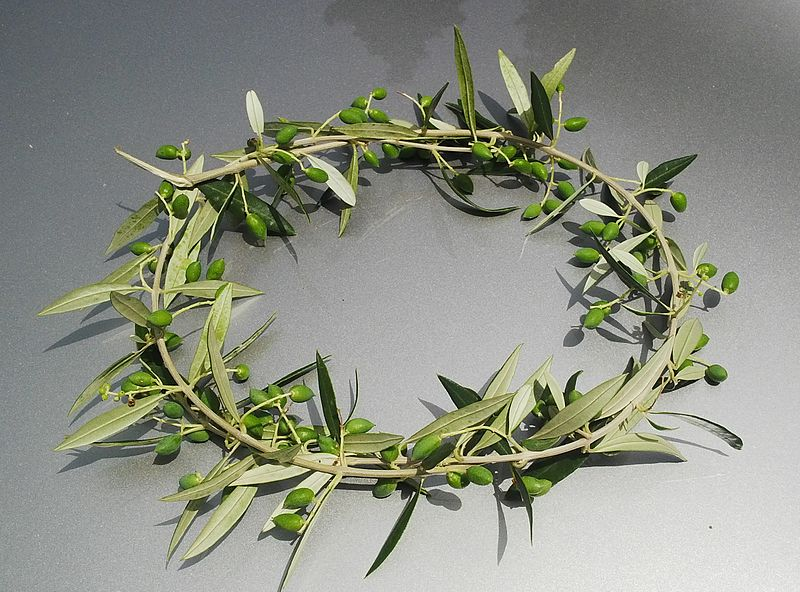
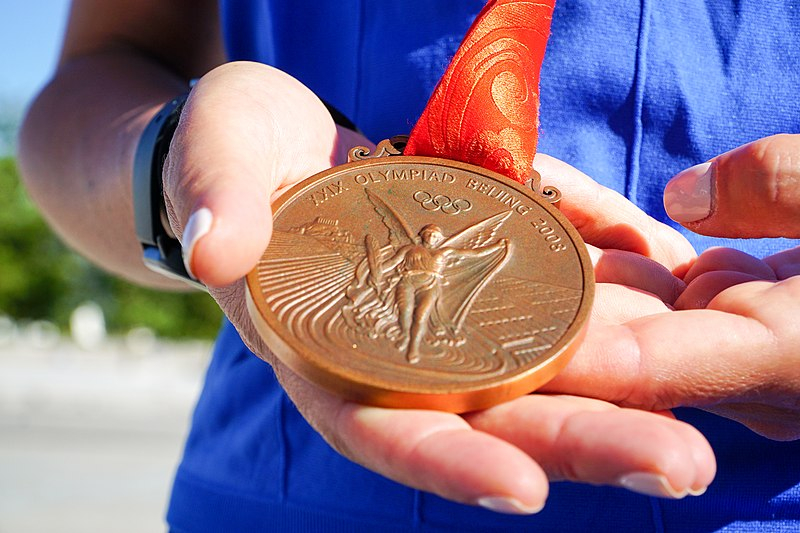

En la antigua Grecia, a los ganadores de las competencias olímpicas no se les entregaban medallas, sino que, como reconocimiento a sus logros, se les colocaba una corona de olivos. Este gesto no solo los honraba por su destacada actuación, sino que también los elevaba al estatus de héroes en sus ciudades de origen donde eran venerados y agasajados como auténticas deidades.
En contraste, en los Juegos Olímpicos modernos, la tradición de otorgar medallas a los ganadores comenzó en los primeros Juegos celebrados en Atenas en 1896. Sin embargo, fue en los Juegos de San Luis en 1904 cuando se estableció la distribución de medallas de oro, plata y bronce para el primer, segundo y tercer lugar respectivamente.
Hoy en día, las medallas de oro, plata y bronce son símbolos universales de logro y excelencia deportiva. Estas preseas no solo representan el talento y el esfuerzo de los atletas, sino también la unión y la competencia amistosa entre las naciones del mundo. A través de los siglos, la naturaleza de los premios olímpicos ha evolucionado, pero su significado perdura como un tributo eterno al espíritu competitivo y la grandeza humana.

{kind=link}

Medalla de bronce Olímpica Beijing 2008. Foto de Nassossopilis disponible en Wikimedia Commons
{kind=link}